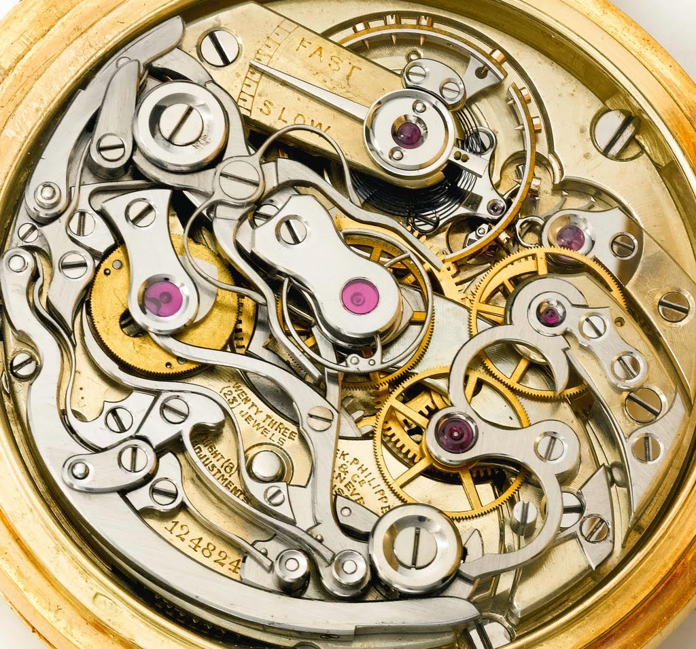

A chronograph watch is a traditional timepiece fitted with an extra complication to act as a stopwatch. A watch can come with one chronograph, usually two and even as much as three at once. These chronographs will be used to measure time (in real-time and relatively) to different levels of accuracy.Chronographs often have complications on the face of the watch which can be used to record different time measurements, moon cycles, heart rate and more. Chronographs have separate buttons to stop, start, and reset the stopwatch complication, with the start button typically at the two and four o’clock position.
1923 Patek Philippe Split-Seconds Chronograph

1923 Patek Philippe Split-Seconds Chronograph Mechanism
As it stands the Patek Philippe 1923 Officer is being referred to as the “earliest known” split chronograph in existence. Sold in 1923, it’s said that it took 20 years to manufacture. The remarkable movement - the smallest and flattest known split-seconds movement - was likely produced by the Victorin Piguet firm. It features a straight line lever escapement, 23 jewels, 8 adjustments, and bi-metallic compensation balance.